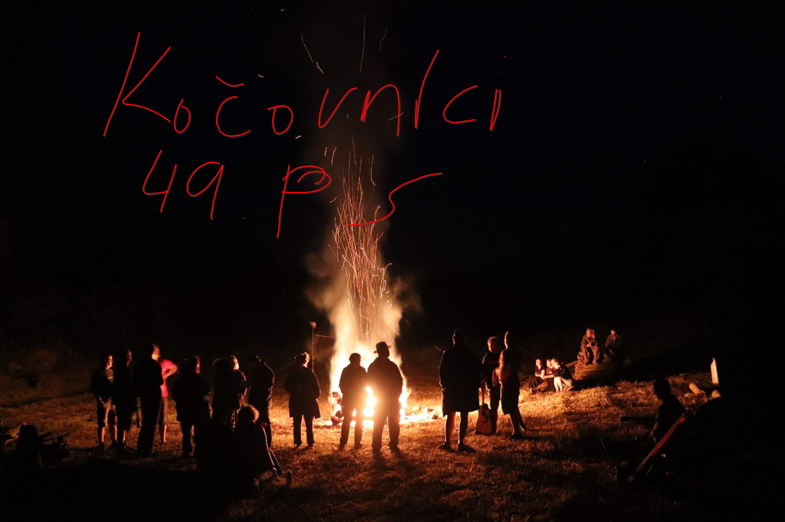
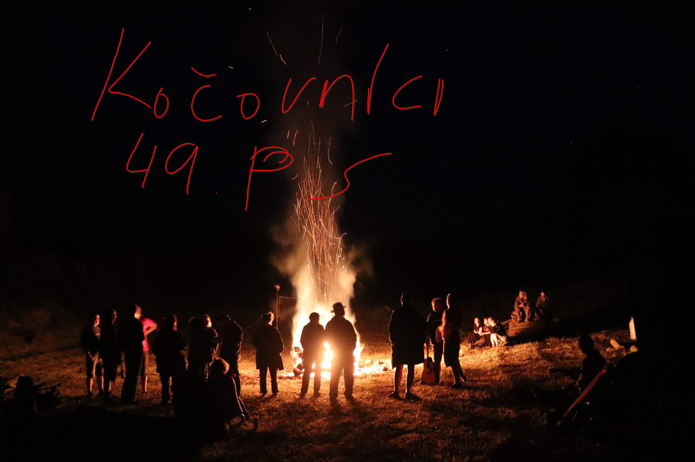

Pojeďte s námi na jednodenní výlet na Karlštejn. Prosím hlašte se na novak@kocovnici.cz do 10.10.2025
O nás
Kdo jsme?
Jsme dětský oddíl s tradicí od roku 1977 zaměřený na turistiku a tábornictví.
Rádi trávíme čas aktivním způsobem v přírodě, snažíme se jí porozumět a v rámci možností i pomáhat.
Jsme oddíl pro děti, takže si nejčastěji hrajeme. Hry mohou mít různé podoby, mohou nás leccos naučit nebo pomoci se o sobě něco nového dozvědět.
Máme za to, že nejlepší je si věci vyzkoušet v bezpečném prostředí na vlastní kůži. Ať už jde o tábornické dovednosti jako vázání uzlů či rozdělávání ohně, ale i třeba umět se o sebe postarat i v nepohodlí nebo vyjít s ostatními v kolektivu.
Ale hlavně jsme parta kamarádů. Velká část členů po překročení dětského věku pokračuje v oddíle jako vedoucí nebo i po ukončení činnosti zůstávají s oddílem v kontaktu.
Oddíl tvoří několik družin, které se schází každý týden v naší klubovně nebo v jejím okolí. V rámci schůzek mimo jiné pilujeme tábornické dovednosti jako je třeba uzlování. Nezůstáváme ale jen u toho - zkoušíme známé i neznámé sporty, hrajeme deskové
hry nebo něco vyrábíme a tvoříme.
Pravidelné výlety
Zhruba jednou měsíčně jezdíme na výlety - na jednodenní většinou do okolí Prahy, na vícedenní do vzdálenějších končin. V zimě spíme v budově (např. v klubovnách jiných oddílů), v létě pod širákem. Na výletech se seznamujeme s přírodou, hrajeme hry a poznáváme
zajímavá místa. Mezi výlety mají již tradičně místo podzimní prázdniny, vánoční výprava či výroční oddílový Oheň.
Jarní tábor na horách
O jarních prázdninách vytáhneme sjezdové i běžkové lyže a vyrážíme na týden na hory za sněhem.
Letní stanový tábor
Vyvrcholením oddílového roku je čtrnáctidenní tábor v červenci. Tábor si sami stavíme na zelené louce, spíme v podsadových stanech a hrajeme dobrodružnou celotáborovou hru. Zároveň se všichni zapojují do běžného každodenního provozu a pomáhají například
s vařením či nočními hlídkami.
Máte zájem?
Napište nám e-mail na adresu info@kocovnici.cz nebo se podívejte na přehled družin a po domluvě se můžete přijít podívat
na schůzku.
 
